Forutsetning: Du har akseptert overføringen av repoet til din GitHub-konto (e-posten fra GitHub med «Accept repository transfer»). Har du ikke gjort det ennå? Gå tilbake til del 1 og fullfør steg 6.
Steg 1: Installer VS Code
VS Code er editoren du redigerer filer i. Den er gratis, brukes av millioner av folk verden over, og har alt du trenger innebygd: filviser, koderedigering og git (så du kan sende endringer til GitHub direkte).
Last ned VS Code
Gå til code.visualstudio.com.
Klikk den store «Download for Windows»-knappen midt på siden.
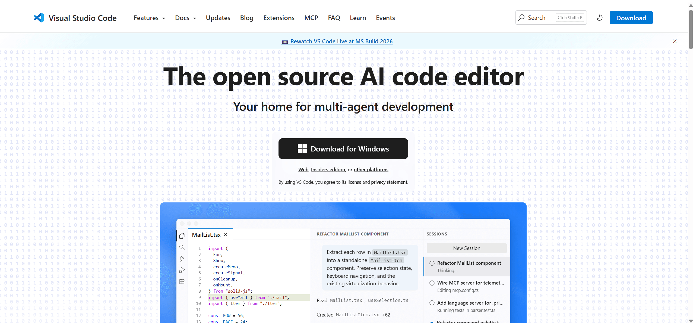
Klikk «Download»-knappen øverst til høyre på siden.
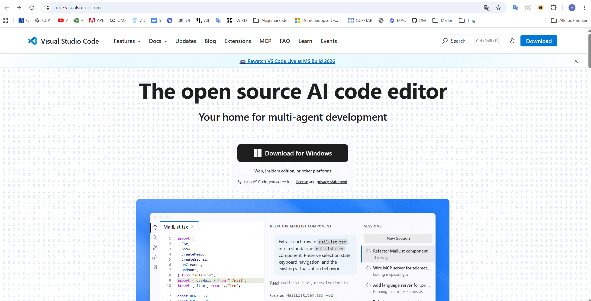
Du blir sendt til nedlastingssiden. Klikk den store «Mac»-knappen.
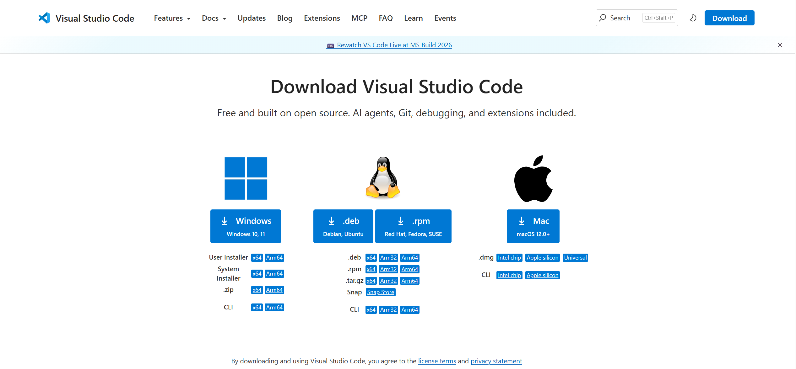
Nedlastingen starter
Nettleseren begynner å laste ned installasjonsfilen. Du ser fremdriften nede i nettleseren (eller i et nedlastingsvindu øverst til høyre). Vent til den er ferdig, filen er ca. 176 MB.
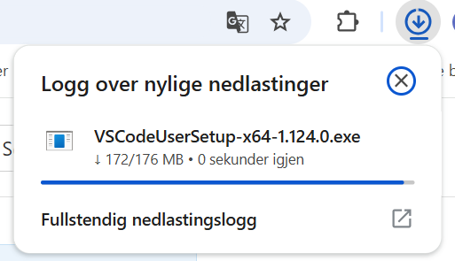
Når det står «Ferdig», klikk på selve filnavnet eller raden for å kjøre installatøren.
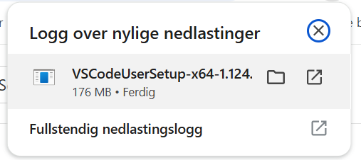
Start installasjonen
Windows spør om du vil kjøre filen, klikk OK eller Kjør. Installasjonsprogrammet åpner seg og viser lisensavtalen. Velg «I accept the agreement» og klikk Next.
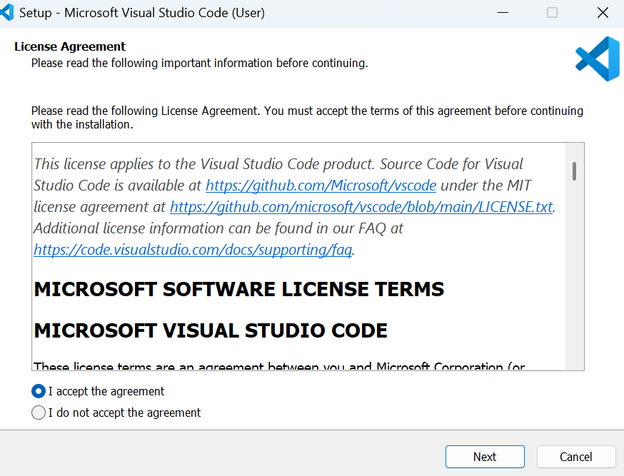
Klikk deg gjennom de neste skjermbildene med Next, standardvalgene er fine. På skjermbildet «Select Additional Tasks» trykker du bare Next.
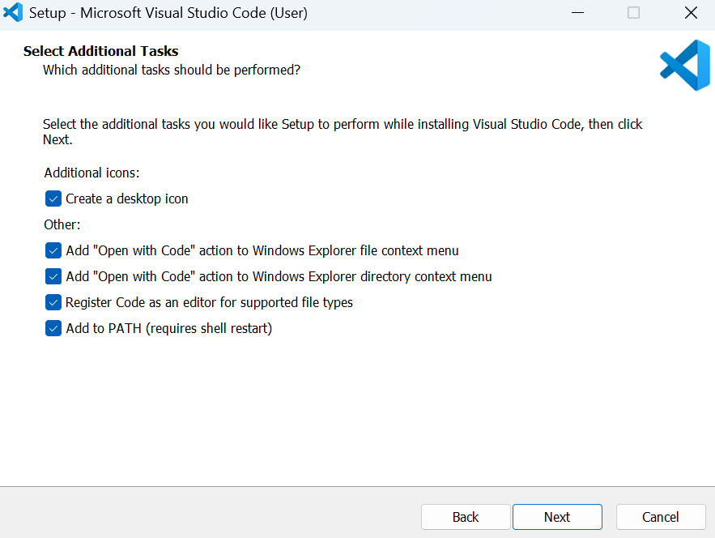
Klikk Install, installasjonen tar et par minutter. Når den er ferdig klikker du Finish. VS Code åpner seg automatisk.
VS Code er installert. Du har nå verktøyet du trenger for å se og redigere filene nettsiden din består av, index.html, style.css, bilder og alt annet. I neste steg henter du selve filene ned til PC-en din.
Installer VS Code
Åpne .zip-filen du lastet ned. Dra «Visual Studio Code»-ikonet til Applications-mappen din. Åpne deretter appen fra Applications.
Åpne VS Code
Start programmet. Du ser en velkomstskjerm med noen snarveier. Du trenger ikke gjøre noe her ennå, bare la den stå åpen til neste steg.
Steg 2: Kopier nettsidefilene til datamaskinen din
Nå skal du kopiere alle filene til nettsiden din fra GitHub over til datamaskinen din. Denne operasjonen kalles «kloning». VS Code har Git innebygd, så du gjør det direkte derfra, ingen ekstra verktøy å installere.
Klikk på Source Control og velg «Clone Repository»
Klikk på Source Control-ikonet i menyen til venstre i VS Code (det ser ut som tre prikker med streker). Klikk deretter på «Clone Repository»-knappen.
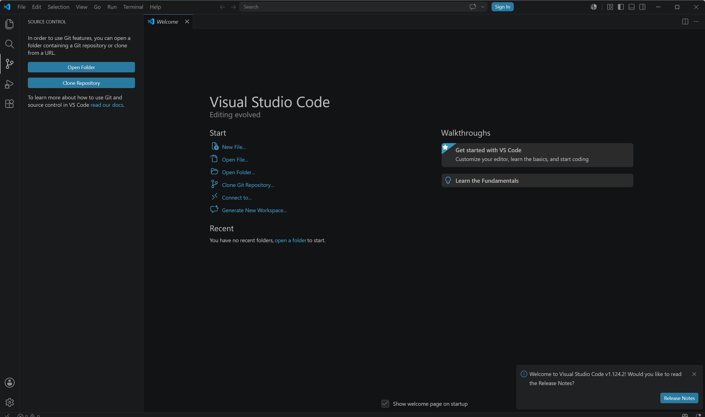
Klikk «Clone from GitHub»
En søkelinje åpner seg øverst i VS Code. Klikk på «Clone from GitHub».
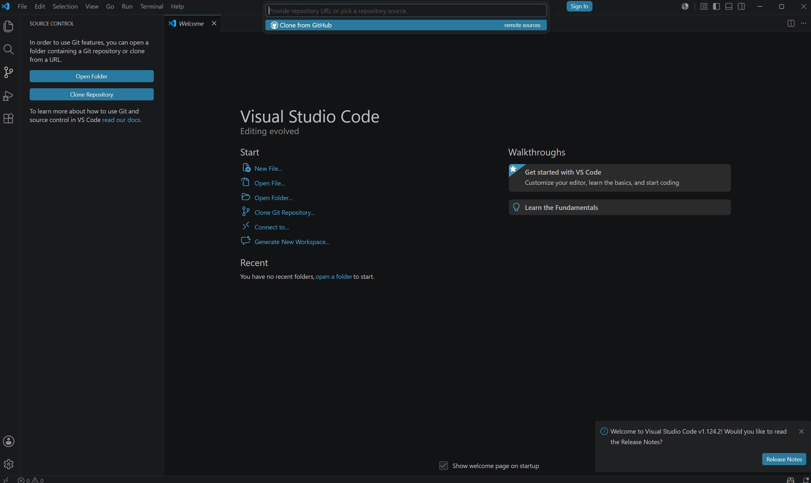
Er du allerede logget inn på GitHub i VS Code?
Da hopper du rett til steg 3, du ser repoet ditt i listen med en gang.
Ber VS Code deg om å logge inn? Gjør disse stegene, og gå så tilbake til steg 3:
Klikk «Allow» i VS Code-dialogen som dukker opp.
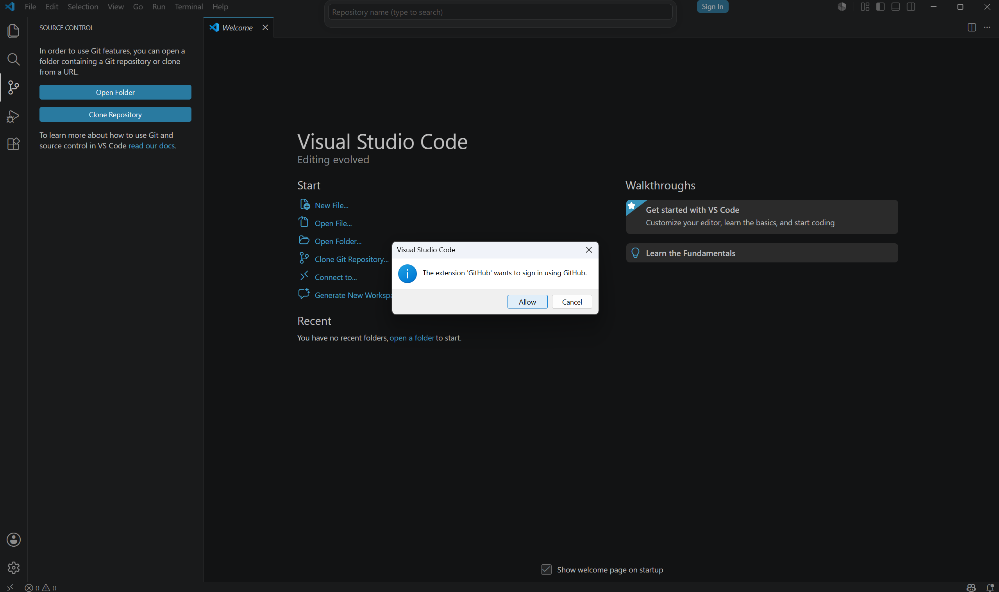
Nettleseren åpner en GitHub-side. Klikk «Authorize Visual-Studio-Code».
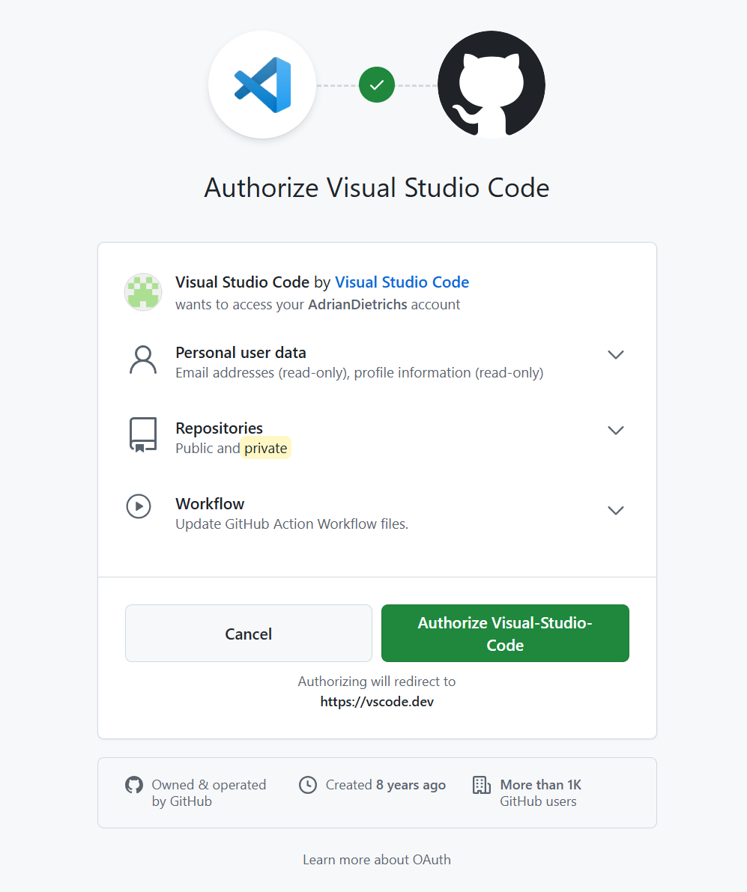
GitHub sender en bekreftelseskode til e-posten din. Skriv inn koden og klikk «Verify».
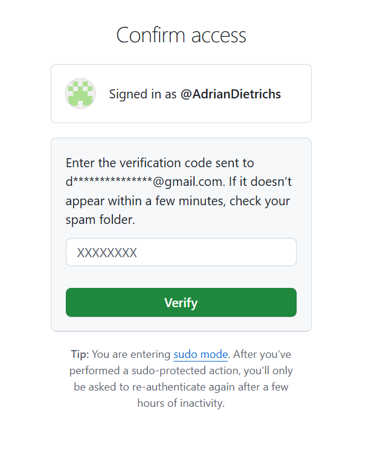
Nettleseren spør om du vil åpne VS Code igjen. Klikk «Åpne».
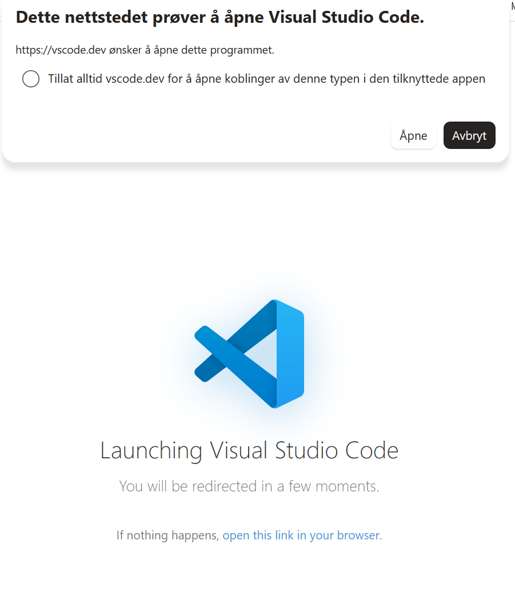
Nå er du tilbake i VS Code, gå til steg 3.
Velg repoet ditt fra listen
VS Code viser en liste med dine GitHub-repoer. Klikk på repoet ditt, det heter noe slikt som brattoy-redesign.
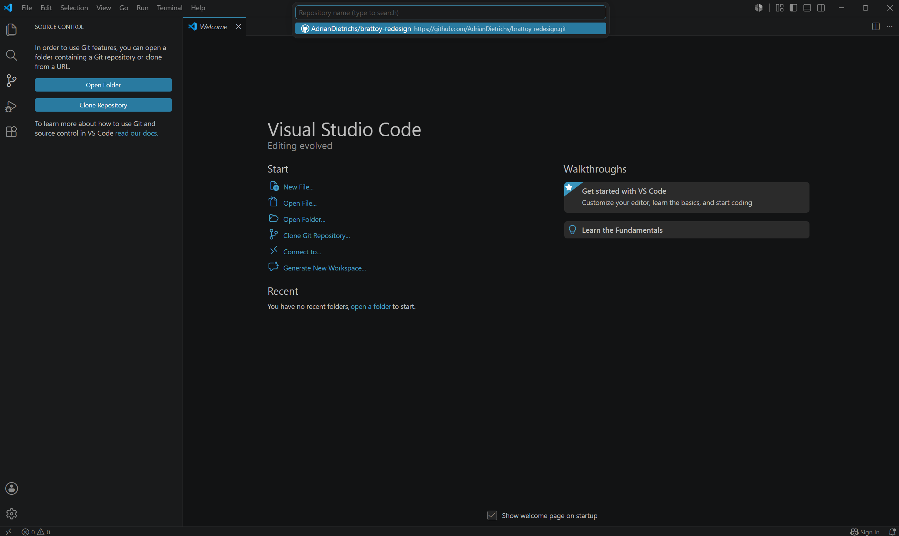
Velg hvor filene skal lagres
VS Code åpner en mappevelger. Vi anbefaler å velge Skrivebordet, da er mappen alltid lett å finne. Klikk «Select as Repository Destination».
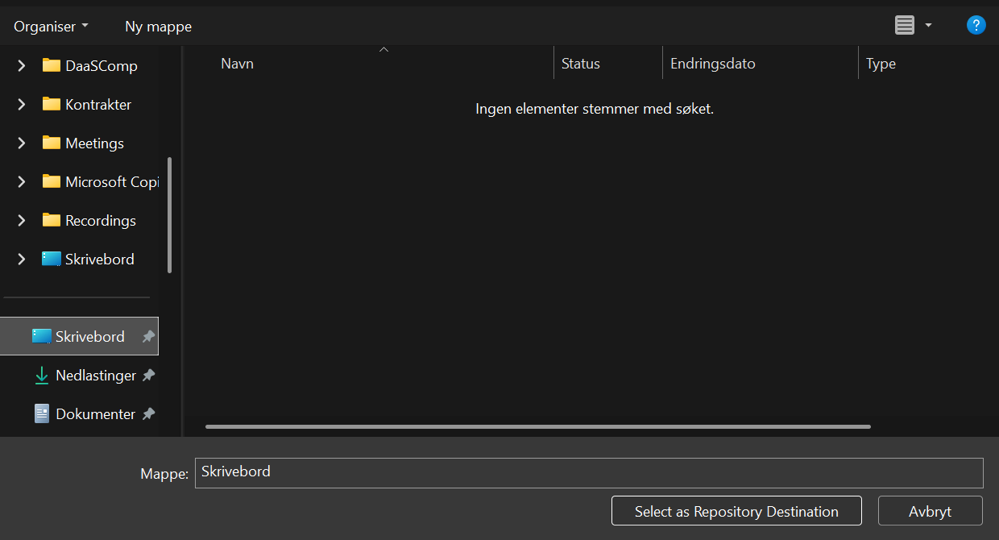
Åpne repoet
Når kloningen er ferdig spør VS Code om du vil åpne mappen. Klikk «Open».
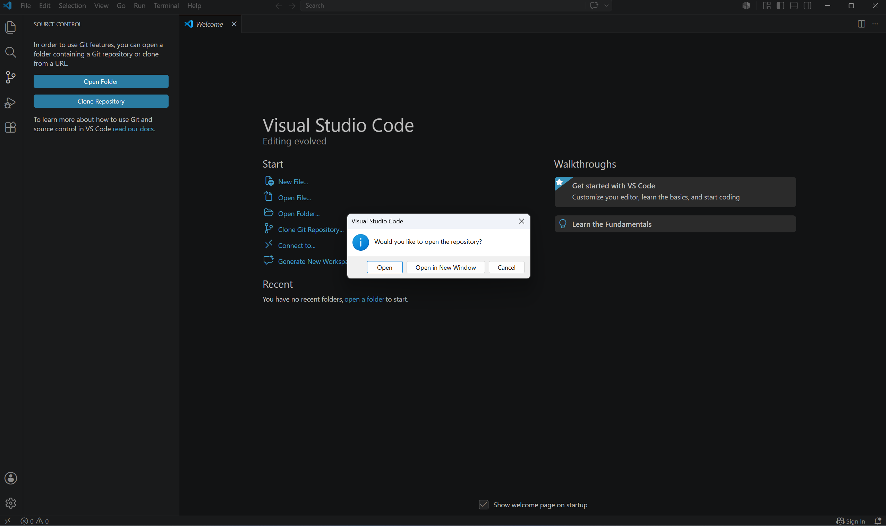
Stol på filene
VS Code spør om du stoler på filene i mappen. Klikk «Yes, I trust the authors». VS Code åpner seg med alle filene til nettsiden din i panelet til venstre: index.html, style.css, bilder osv. Du er klar til neste steg.
Steg 3: Forhåndsvis nettsiden
Alle filene til nettsiden din ligger nå på datamaskinen din. La oss åpne forsiden og se at alt ser riktig ut. Forsiden heter index.html, det er den du åpner i nettleseren for å se nettsiden slik den ser ut i dag.
Åpne index.html i nettleseren
- I VS Code: høyreklikk på
index.htmli Explorer-panelet til venstre - Velg «Reveal in File Explorer» (Windows) eller «Reveal in Finder» (Mac)

- Dobbelklikk på
index.htmli vinduet som åpner seg
Åpner den seg i VS Code eller Notisblokk i stedet? Høyreklikk på filen → Open with → velg Chrome, Edge eller Firefox.

Nettsiden åpner seg i nettleseren din, akkurat slik den ser ut i dag. ✓

Steg 4: Velg din arbeidsmetode
Her skiller veiene seg. Begge metodene fungerer, forskjellen er pris og hvor mye du gjør manuelt.
Velg din arbeidsmetode
Hvilken passer for deg?
- Gratis, passer hvis du gjør enkle endringer innimellom, som å oppdatere tekst eller bytte ut bilder.
- Pro (anbefalt), passer hvis du vil gjøre større endringer, legge til nye seksjoner, eller utforske automatisering. Du trenger ikke betale hele året, kjøp én måned, gjør alle endringene på én gang, og si opp. Da koster det kun 250 kr for hele «ombyggingen».
Åpne Google AI Studio
For gratis-sporet bruker du Google AI Studio, en gratis nettside fra Google. Ingen nedlasting, ingen installasjon. Alt du trenger er en Google-konto og en nettleser.
Gå til Google AI Studio
Åpne nettleseren din og gå til aistudio.google.com. Logg inn med Google-kontoen din, den du bruker til Gmail eller YouTube.
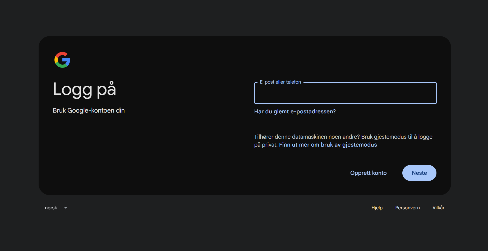
Start en ny samtale
Når du er logget inn ser du Google AI Studio. Klikk «+ New prompt» øverst til venstre for å starte en tom chat. Du ser en chat-boks nederst, skriv inn spørsmålet ditt og trykk Enter. Google AI Studio er helt gratis og har ingen meldingsgrense.
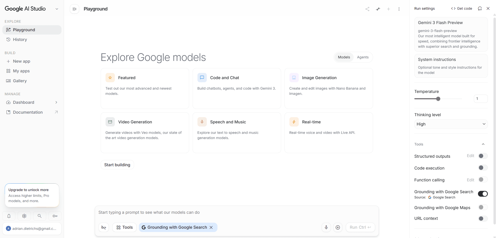
Tips: bruk Google AI når du lurer på noe i kurset
Er det noe i kurset du ikke forstår? Bare spør Google AI. Det aller beste du kan gjøre er å lime inn innholdet fra kurssiden du er på, da vet AI-en nøyaktig hva du holder på med og kan svare mye mer presist.
Slik gjør du det:
- Gå til kurssiden du er på i nettleseren
- Trykk Ctrl+A for å markere alt innholdet på siden
- Trykk Ctrl+C for å kopiere
- Gå til Google AI Studio, klikk i tekstfeltet og trykk Ctrl+V
- Skriv spørsmålet ditt etter det innlimte innholdet og send
Eksempel på en god prompt:
Velg riktig modell
En modell er selve AI-motoren, tenk på det som hjernen bak svarene. Ulike modeller er trent på ulike mengder data og har ulik kapasitet. Noen er raskere, noen er smartere.
Vi anbefaler å bruke Gemini 3.1 Pro Preview så mye som mulig, det er den smarteste og gir de beste svarene. Pro-modellen har et daglig forbrukstak, så etter en stund kan det hende den stopper. Da bytter du over til Gemini 3 Flash Preview, som har tilnærmet ubegrenset forbruk. Flash er litt svakere, men fungerer fint for de fleste oppgaver.
Slik bytter du modell:
Klikk på modellnavnet øverst til høyre i Google AI Studio, der det står «Gemini 3 Flash Preview» (eller hvilket navn som vises). Da åpner det seg en liste over tilgjengelige modeller.
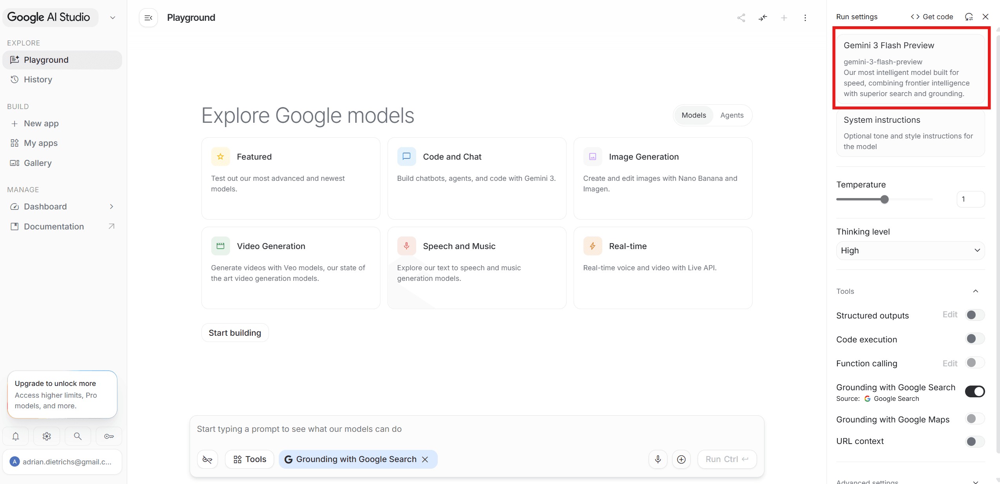
Velg Gemini 3.1 Pro Preview fra listen. Start alltid med Pro, bytt til Flash først når Pro melder at du har brukt opp kvoten for dagen.
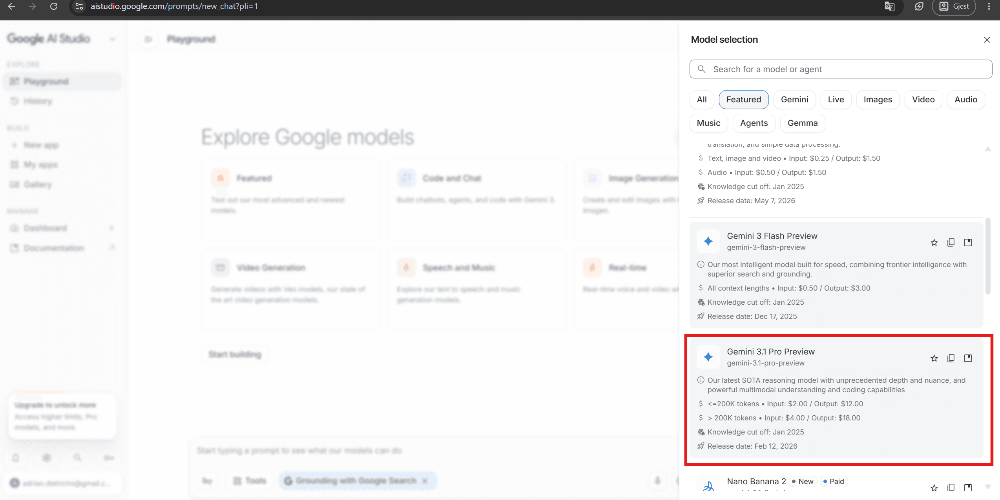
Slik fungerer arbeidsflyten din
I stedet for å kopiere og lime inn kode manuelt kan du laste opp filene direkte til Google AI Studio. Da ser AI-en hele nettsiden på én gang og kan gjøre endringer med full oversikt.
Last opp nettsidefilene til Google AI Studio:
1. Klikk på «+»-knappen i tekstfeltet nederst i Google AI Studio, og velg «Upload files».
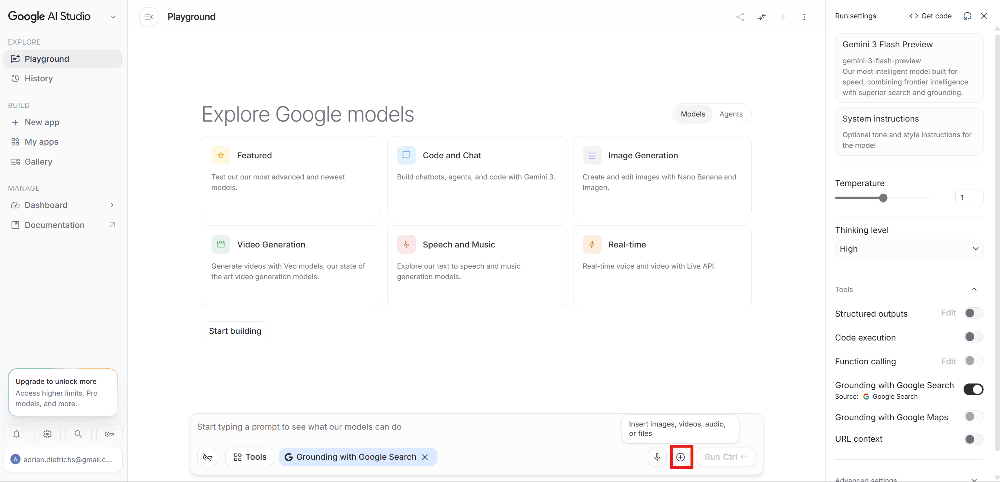
2. Naviger til mappen der du lagret nettsiden fra GitHub. Du trenger ikke alle filer, det holder med de tre viktigste: app.js, index.html og style.css. Klikk på app øverst, hold inne Shift og klikk på style nederst, da markeres alle tre samtidig. Klikk «Åpne».
Vil du gjøre noe med bilder? Legg til assets-mappen også.
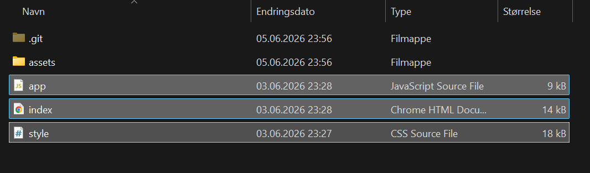
3. Filene lastes inn i Google AI Studio. Nå kan du skrive hva du vil endre, AI-en ser hele nettsiden og svarer med oppdatert kode.
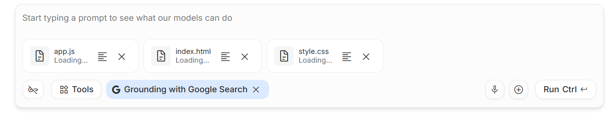
Resten av flyten:
- AI-en svarer med oppdatert kode, kopier den aktuelle filen
- VS Code, åpne filen, marker alt (
Ctrl+A), lim inn (Ctrl+V), lagre (Ctrl+S) - Nettleseren, trykk F5, sjekk at det ser riktig ut
- VS Code Source Control, commit + push, og endringen er live om 30–60 sek
⚠ Det viktigste av alt: gi AI-en god kontekst
Kontekst er alt. Jo bedre AI-en forstår hva du ønsker, jo bedre blir resultatet. Ikke vær redd for å bruke tid på å forklare, det sparer deg for feil og ekstra runder etterpå.
Be alltid AI-en om å stille deg spørsmål først:
Før AI-en gjør noe som helst, er det lurt å be den spørre deg om det den er usikker på. Da slipper du at den gjetter feil og gjør noe du ikke ville. Avslutt alltid prompten din med noe slikt:
Slik jobber du smart med AI: bruk tid i starten på å bli forstått, ikke tid på å rette opp feil etterpå.
Alt er klart. I neste modul gjør du din første ekte endring, fra VS Code, gjennom AI-en og live på nettsiden.
Kjøp Claude Pro
Pro-abonnementet gir deg ubegrenset antall meldinger og en bedre modell. Arbeidsflyten er den samme som gratis-sporet, du laster opp filene, beskriver endringen og kopierer svaret tilbake, men du bruker Claude-appen i stedet for Google AI Studio.
Gå til claude.ai og logg inn
Gå til claude.ai. Opprett en konto med Google-kontoen din, eller logg inn hvis du allerede har en.
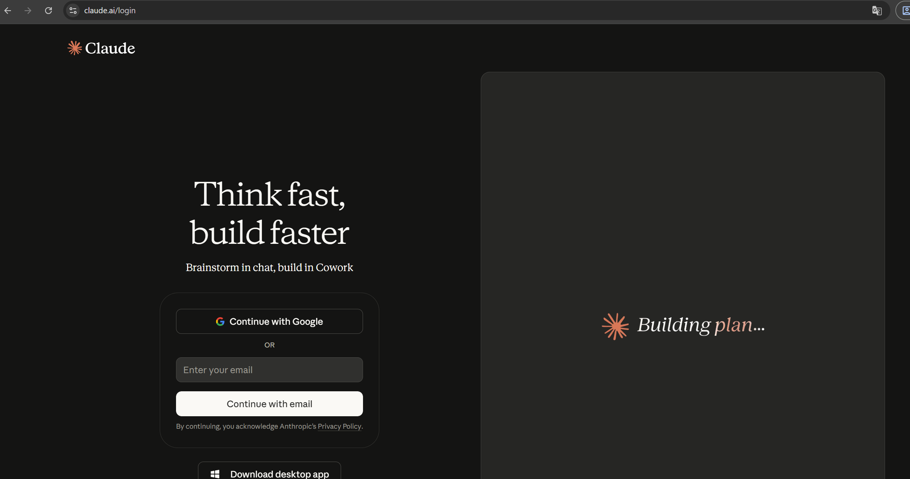
Oppgrader til Pro
Klikk på profilikonet ditt nederst til venstre og velg «Upgrade plan».
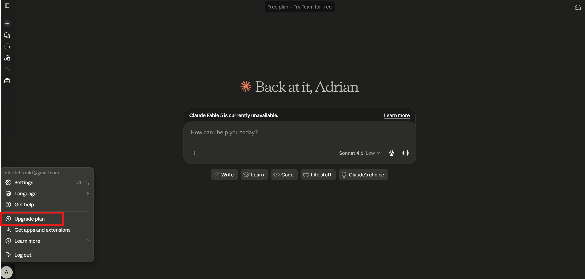
Velg Pro til $20/mnd
Du ser tre planer: Free, Pro ($20/mnd) og Max ($100+/mnd). Klikk «Get Pro plan». Fyll inn kortinformasjonen og bekreft.
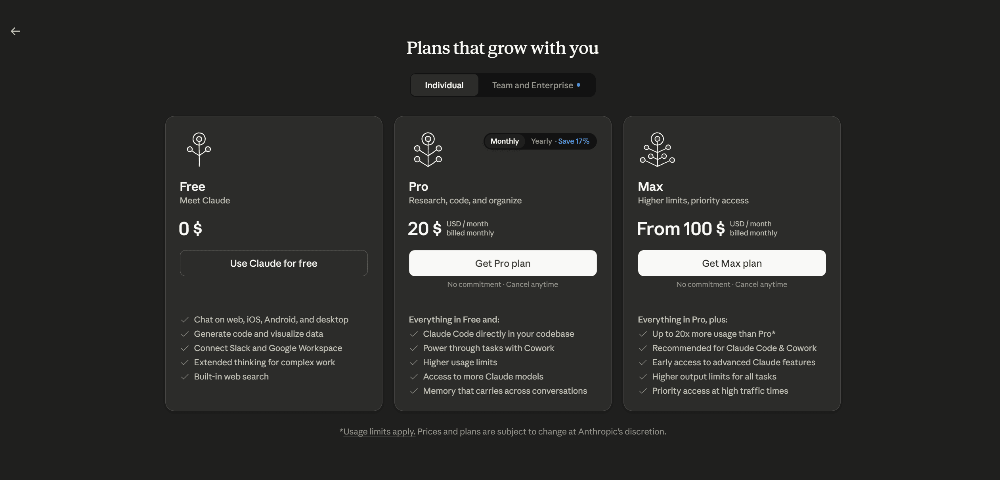
Slik avslutter du abonnementet
Du betaler kun for den måneden du bruker, ingen binding. Slik sier du opp:
1. Klikk på profilikonet ditt nederst til venstre og velg «Settings»
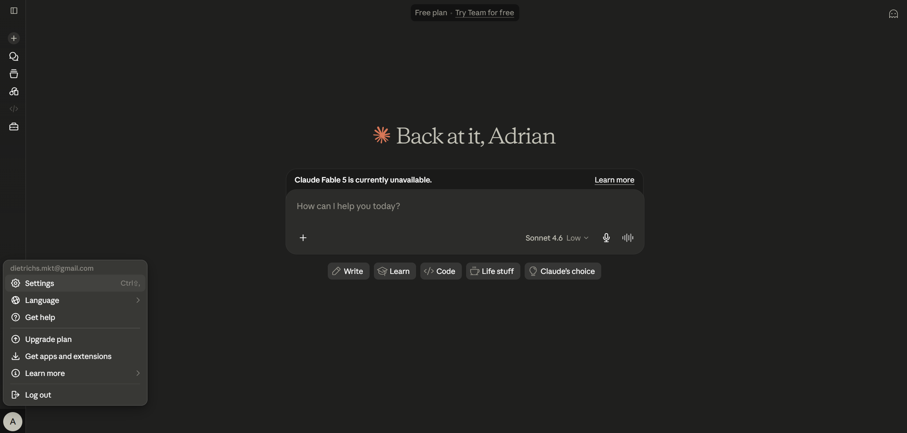
2. Gå til «Billing» og scroll ned til «Cancellation» → klikk «Cancel»
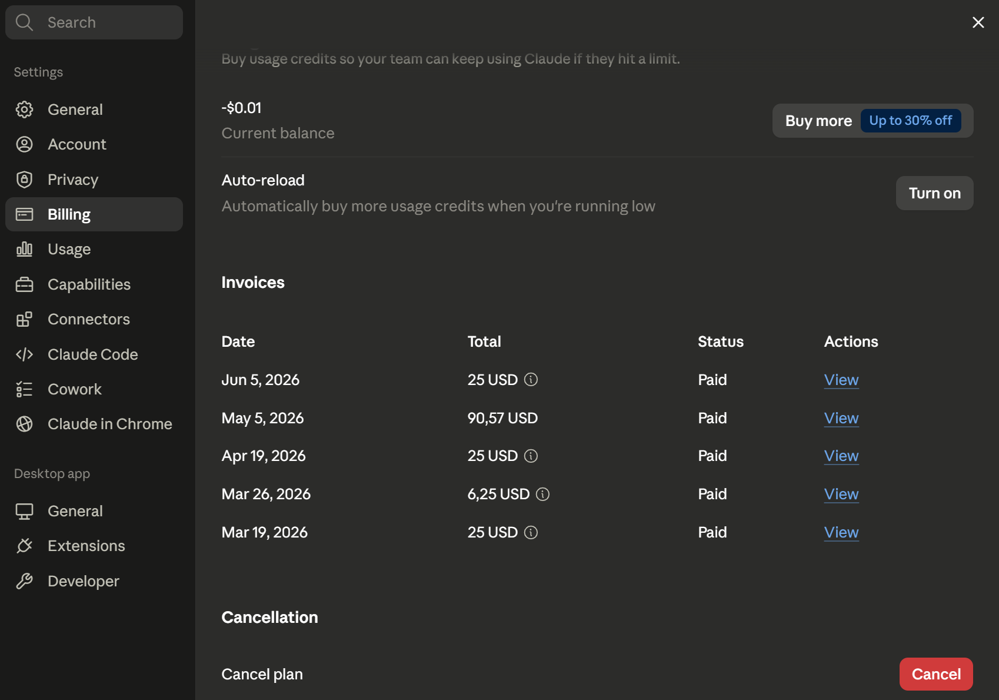
Du beholder Pro-tilgangen ut måneden du allerede har betalt for.
Last ned Claude-appen
Last ned og installer appen
Gå til claude.ai/download og klikk nedlastingsknappen for Windows eller Mac.
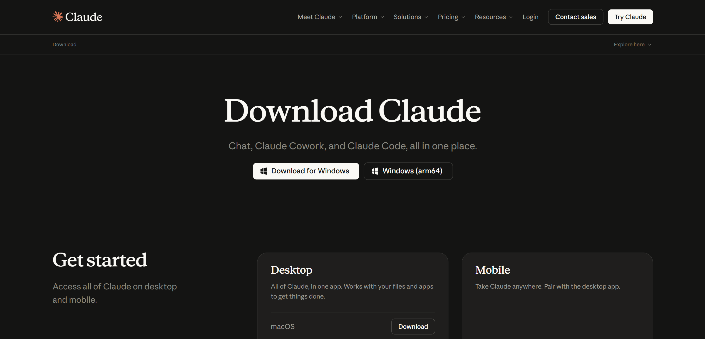
Installasjonsvideo:
🪟 Windows
🍎 Mac
Logg inn med Pro-kontoen din
Åpne Claude-appen og logg inn med samme e-post du brukte da du kjøpte Pro. Du er klar til å bruke Claude uten meldingsgrense.
Slik fungerer arbeidsflyten din
Med Claude Pro og desktop-appen trenger du ikke å kopiere og lime inn kode manuelt. Claude kan redigere filene på datamaskinen din og laste opp endringene til GitHub, alt du gjør er å skrive hva du vil endre.
Hele arbeidsflyten i ett steg: Åpne Claude-appen → skriv hva du vil endre på nettsiden → Claude redigerer filene og publiserer endringen på nettsiden din. Ferdig.
Jo bedre du forklarer hva du vil, jo bedre blir resultatet. Be gjerne Claude stille spørsmål om det som er uklart før den gjør noe, da unngår du at den gjetter feil.
Alt er klart. I neste modul gjør du din første ekte endring, direkte gjennom Claude og live på nettsiden.
Du har nå gjort den største jobben. Oppsett er det tyngste steget, og det er unnagjort. Fremover er det bare å åpne Google AI Studio (gratis) eller Claude-appen (Pro), gjøre endringen og trykke Commit & Push. Kortere og kortere for hvert gang.
- Nettsidefilene kopiert over til datamaskinen din
- Nettsiden forhåndsvist i nettleseren
- Google AI Studio (gratis) eller Claude-appen (Pro) satt opp og klar til bruk